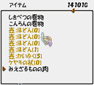
★传说の道具――みえざるものの肉
哇靠！这就是传说中的长生不老肉啊……秦始皇找它N千年了！
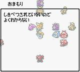
★传说の道具――おまもり
护身符的最初版本，查看说明竟然写着“未识别”，晕ing……
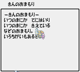
★传说の道具――きんのおまもり
| 说明中是这样写的：不知不觉地入手，不知不觉地消失，迷之护身符，存在着色彩的差别。 |
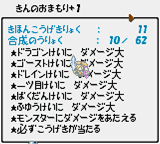
★传说の道具――きんのおまもり
| 金护身符作为武器来合成的场合，基本攻击力11，合成数……很夸张吧？
倒数第2个能力是什么呀……「给怪物伤害」？莫名其妙的能力…… |
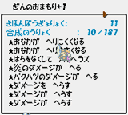
★传说の道具――ぎんのおまもり
| 银护身符作为盾来合成的场合，基本防御力11，合成数……啊哦，我没看错吧？太离谱啦！顺数第3个能力似乎是锁定满腹度的说……而最后3个能力都是普通伤害减半的，怎么可能有这些能力的存在？ |
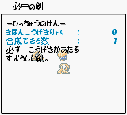
★传说の道具――必中の剑（实体版）
“必中之剑”的实体版，可惜只有躯壳没有灵魂。也就是说没有任何效果。
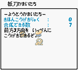
★传说の道具――妖刀かまいたち（实体版）
“妖刀镰井达”的实体版，可惜只有躯壳没有灵魂。也就是说没有任何效果。
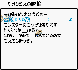
★传说の道具――纸一重の腕轮（实体版）
“纸一重之腕轮”的实体版，可惜只有躯壳没有灵魂。也就是说没有任何效果。
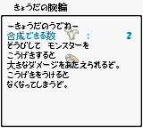
★传说の道具――强打の腕轮（实体版）
“强打之腕轮”的实体版，可惜只有躯壳没有灵魂。也就是说没有任何效果。
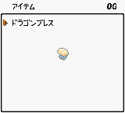
★传说の道具――ドラゴンブレス
迷之“龙佑符”，没有任何文字说明，效果不明。
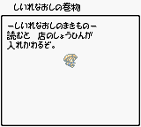
★传说の道具――仕入れ直しの卷物
只限在商店内使用的“商品替换之卷物”，对于购物有点帮助，但不太实用。
★传说の道具――壶われずの卷物
| 可以令壶不会损坏的“不碎壶之卷物”，不坏的壶在其名称后面有个五角星的标志（见右图），建议对保存之壶使用。不过在西林GB2中，壶的损坏几率很低，没有在风来外传里那么高，所以这个道具也不是很实用。 |
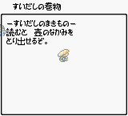
★传说の道具――吸い出しの卷物
吸出之卷物可以与壶增大卷物、合成之壶再配合无限祝福法使用，可以无限合成。
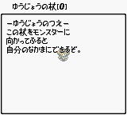
★传说の道具――ゆうじょうの杖
| 可令敌方怪物变为己方NPC来协助战斗的“友情之杖”，不过完成度不高，BUG极多，而CHUNSOFT干脆没有进行最终完善就让此杖长眠了，可惜！ |

传说道具大集合！非CHUNSOFT公认的BUG道具……